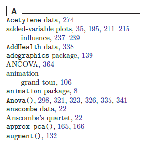
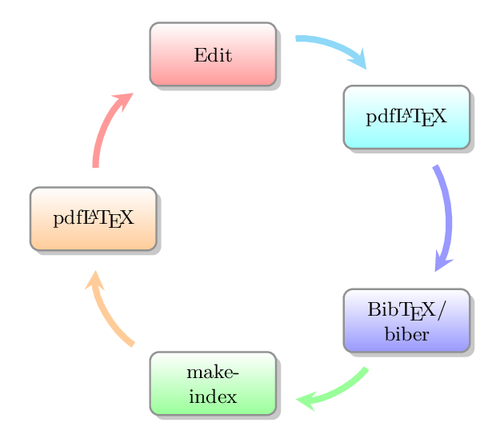
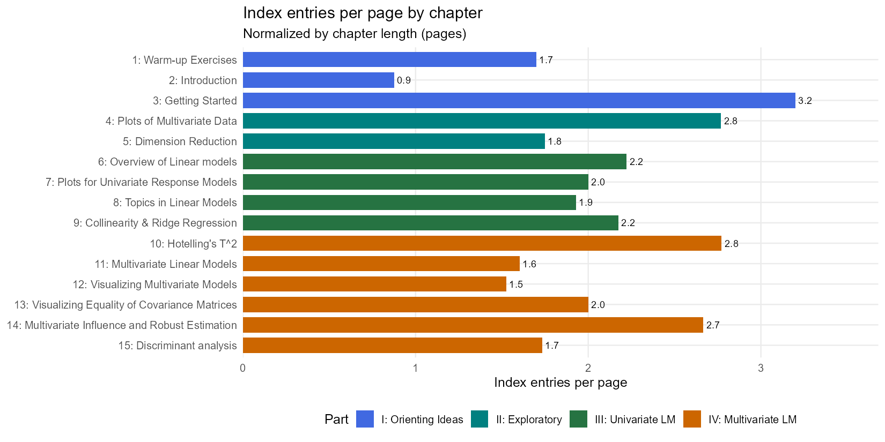
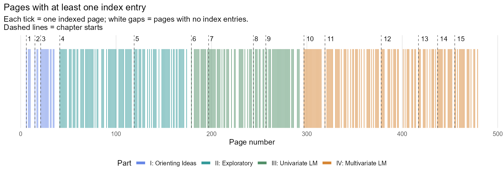
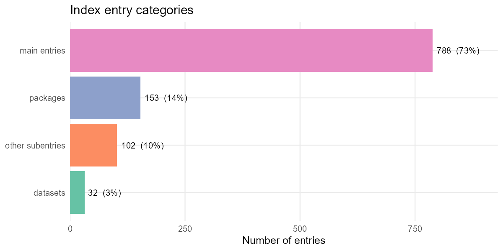
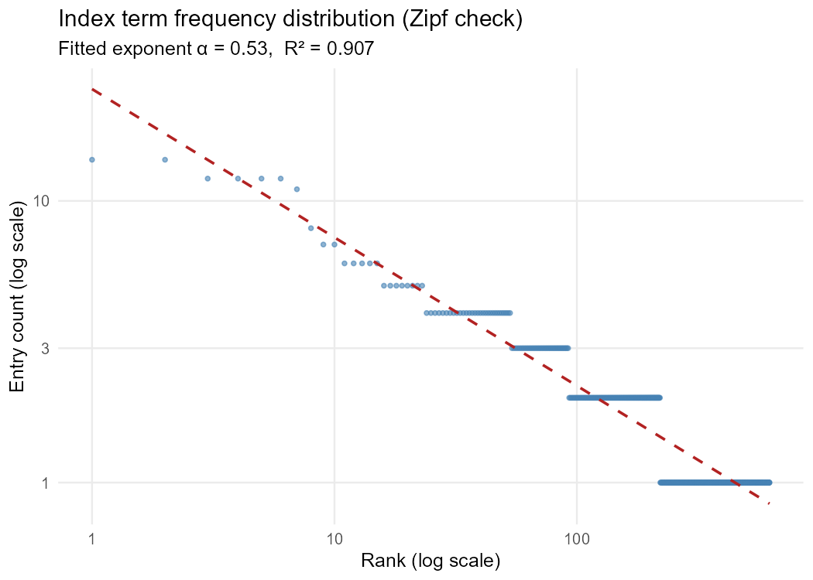

Creating Book Indexes in Quarto
A good index is essential for a printed textbook or scholarly book: it transforms your linear text into a usable research tool, allowing your readers to find specific information without flipping through pages to find what they’re looking for. While a table of contents provides a general overview, a high-quality index acts as a detailed, analytical map, enhancing the book’s usability, scholarship, and long-term value.
- In a book using R, a good index helps readers find the use of functions, packages and datasets used as examples.
- In a book illustrating statistical models or data visualization methods, a high-quality index helps them find the concepts or methods discussed, particularly when they are spread across multiple chapters.
- Conversely, lack of a good index can make a printed book frustrating to use when you want to find out how to do some particular thing or how some method should be understood.1
Modern writing tools like Rmarkdown, Pandoc and Quarto open new vistas in book writing and publishing. From a single source of text files, you can produce output in HTML, PDF, eBook and other formats now widely used. However, writing a book with Quarto for dual HTML/PDF output creates interesting challenges for indexing. In a traditional LaTeX workflow (.Rnw files) you pepper your source with \index{entry} commands by hand and get PDF output. In Quarto, you write in a Quarto-flavored Markdown, R code chunks, processed by knitr produce output text and graphics inline. But the same source must serve both an HTML website and a print-ready PDF. This post describes how I handled indexing for Visualizing Multivariate Data and Models in R (CRC Press / Chapman & Hall, in preparation).

The basic problem
For PDF output, LaTeX’s \index{entry} command is the standard mechanism. It writes index entries to a .idx file as they appear in your document with the page number where it occurred. A related program, makeindex, sorts and formats these into the final .ind file that LaTeX typesets as the back-of-book index in response to a \printindex command.
The \index{} macro is very flexible: it provides all the features you need for a professional index: subentries (\index{datasets!Prestige}), cross-references (\index{PCA|see {principal components analyisis}}), controlling sorting order vs. visual appearance (\index{F@$\vec{F}$}), …
The cycle of editing, running R code (using knitr), compiling to LaTeX, generating a bibliography and an index was straightforward.2

For HTML output there is no logical equivalent of an index, because it doesn’t have “pages” that can be referred to. Instead, for book projects, Quarto provides a Search facility; useful, but not as much as a well-crafted index could do. But what happens with those \index{} commands? In Quarto one solution is straightforward for any text you want to appear only in the PDF version: wrap index calls in a conditional block:
::: {.content-visible when-format="pdf"}
\index{some term}
:::Actually, this is usually not a problem: pandoc silently ignores (most) LaTeX code in your input when the output is not for a PDF build.
But this is cumbersome when you want to index every mention of an R package, dataset, or function — which might appear dozens of times in inline code like `ggplot2`. You want indexing to happen automatically at the point of use, without cluttering the prose with conditional blocks.
R helper functions for inline use
The solution I adopted is a set of R helper functions — pkg(), package(), dataset(), and func() — defined in R/common.R and sourced at the top of every chapter. For convenience, these functions are available here.
These are used as inline R expressions in the text; they format names appropriately for each output format (e.g., perhaps rcolorize(“bold”, “brown”)for HTML and usingfor the PDF). But they also emitentries for PDF. They _do not_ generate the` entries directly. Rather, they rely on LaTeX macros (described below) to ensure consistency of the index entries and allow for generating more than one index entry for a package or dataset.
pkg() — R packages
pkg <- function(package, cite = FALSE) {
if (knitr::is_latex_output()) {
pkgname <- paste0("\\texttt{\\textbf{", package, "}}")
} else {
pkgname <- paste0("**", package, "**") # bold in HTML
}
ref <- colorize(pkgname, "brown") # distinctive color in both formats
if (cite) ref <- paste0(ref, " [@R-", package, "]")
if (knitr::is_latex_output()) {
ref <- paste0(ref, "\n\\ixp{", package, "}\n")
}
ref
}The actual pkg() function is more general. It allows you to set the font properties (face, color) for the package name globally, e.g.,
pkgname_font = "bold" # or: plain, ital, boldital
pkgname_color ="brown" # uses colorize()In prose you write:
The <span style='color: brown;'>**ggplot2**</span> package provides a grammar of graphics...For PDF this expands to something like:
\textcolor{brown}{\texttt{\textbf{ggplot2}}}
\ixp{ggplot2}The LaTeX macro \ixp{} (described below) does the heavy lifting of formatting the package name as an index entry.
For HTML it produces **ggplot2** in brown (via a CSS span), with no LaTeX leaking through.
The package() function is nearly identical but appends the word “package” — useful for sentences like “the car package provides…” where you want “the car package provides…” rather than just the bare name.
Package citations
The argument cite = TRUE also generates a citation to the package, with a citation key of the form @R-package. The file R/common.R includes code (write_pkgs()) to collect the names of all packages loaded via library() calls in the current chapter. These are formatted into BibTeX entries, written to a file packages.bib after the last chapter.
# write list of packages used at end of every chapter
# NB: use results: "none" to hide the output
.pkg_file <- here::here("bib", "pkgs.txt")
base_pkgs <- c("stats", "graphics", "grDevices", "utils", "datasets", "methods", "base")
write_pkgs <- function(file="", quiet = FALSE) {
pkgs <- .packages() |> sort() |> unique()
pkgs <- setdiff(pkgs, base_pkgs)
np <- length(pkgs)
if (!quiet) cat(np, " packages used here:\n", paste(pkgs, collapse = ", ") )
if(np > 0) cat(pkgs, file = .pkg_file, append=TRUE, sep = "\n")
}dataset() — named datasets
Datasets can me named in the text using either the form datasetname or pkg::datasetname; the package name can also be given using the package argument. The dataset() function parses this and creates appropriate index entries.
dataset <- function(name, package = NULL) {
dname <- name
dpkg <- package
# handle pkg::name syntax
if (stringr::str_detect(name, "::")) {
parts <- stringr::str_split(name, "::", 2)[[1]]
dname <- parts[2]; dpkg <- parts[1]
}
if (knitr::is_latex_output()) {
ref <- paste0("\\texttt{", name, "}")
ref <- paste0(ref, "\n\\ixd{", dname, "}")
if (!is.null(dpkg)) ref <- paste0(ref, "\n\\ixp{", dpkg, "}")
} else {
ref <- paste0("`", name, "`")
}
ref
}Usage:
The `Prestige` dataset records occupational prestige
scores for 102 Canadian occupations. The `dplyr::startwars` dataset
contains information on 87 characters from Starwars.The pkg::name shorthand is also supported:
`carData::Prestige`Both expand to the same PDF output: \texttt{Prestige} followed by index entries via \ixd{Prestige} and \ixp{carData}.
func() — R functions
func <- function(name, package = NULL) {
fname <- name
if (stringr::str_detect(name, "::")) {
parts <- stringr::str_split(name, "::", 2)[[1]]
fname <- parts[2]
}
if (knitr::is_latex_output()) {
ref <- paste0("\\texttt{", escape(name), "}")
ref <- paste0(ref, "\n\\ixfunc{", fname, "}{", escape(fname), "}\n")
} else {
ref <- paste0("`", name, "`")
}
ref
}The helper escape() converts _ to \_, because a bare _ is interpreted in LaTeX as a subscript.
escape <- function(name) gsub("_", "\\_", name, fixed = TRUE)Usage:
Use `lm()` to fit a linear model and `stat_ellipse()` to add a data ellipse to a scatterplot.LaTeX macros
The R functions emit short macro calls rather than raw \index{} strings. The macros live in latex/preamble.tex and provide three benefits:
Consistent formatting — the display text in the index is always
\texttt{name}, never accidentallyname(plain) or\texttt {name}(with spurious spaces from TeX’s write mechanism).Dual entry — packages and datasets appear under two headings automatically: their own name and a collective subheading (
packages!,datasets!).Correct
makeindexsorting — thesort-key@display-textsyntax ensures alphabetical ordering by the plain name while the typeset entry uses monospace.
\ixp — packages
\newcommand{\ixp}[1]{%
\index{#1@\texttt{#1} package}%
\index{packages!#1@\texttt{#1}}%
}\ixp{ggplot2} produces two .idx entries:
\indexentry{ggplot2@\texttt{ggplot2} package}{42}
\indexentry{packages!ggplot2@\texttt{ggplot2}}{42}The first gives a standalone entry “ggplot2 package”; the second collects all packages under a “packages” heading with sub-entries.
\ixd — datasets
\newcommand{\ixd}[1]{%
\index{#1@\texttt{#1} data}%
\index{datasets!#1@\texttt{#1}}%
}Exactly parallel to \ixp, but appending “data” to the display text and grouping under “datasets”.
\ixfunc — R functions
\newcommand{\ixfunc}[2]{%
\index{#1@\texttt{#2}}%
}\ixfunc takes two arguments — the sort key and the display text — for reasons explained in the next section. The caller includes () in both arguments; the macro does not add them.
Other index macros
\newcommand{\IX}[1]{\index{#1}#1} % index + typeset in surrounding font
\newcommand{\ix}[1]{\index{#1}} % index only, no output
\newcommand{\ixmain}[1]{\index{#1|textbf}} % bold (main) page number
\newcommand{\ixon}[1]{\index{#1|(}} % open a page range
\newcommand{\ixoff}[1]{\index{#1|)}} % close a page range\ixon{} / \ixoff{} are useful for marking the start and end of an extended discussion, so the index shows a range like “lm(), 87–93” rather than individual page numbers on every page of the section.
The underscore problem
R function names commonly contain underscores: stat_ellipse(), geom_point(), coord_flip(). In LaTeX, _ outside math mode raises an error (it is the subscript character). Inside \texttt{} it is tolerated in some contexts, but inside \index{} entries — which are written to an external .idx file and later read back during \ind generation — it causes problems. (How to fix this was asked on TeX Stackexchange, but without success.)
The difficulty comes in two places:
1. Display text in \index{}
The display portion of a makeindex entry (after @) is LaTeX source that will be typeset when the .ind file is processed. _ must therefore be escaped as \_. The escape() helper and the two-argument \ixfunc macro handle this:
# R side: generate the macro call
ref <- paste0(ref, "\n\\ixfunc{", fname, "}{", escape(fname), "}\n")For func("stat_ellipse()") this produces:
\ixfunc{stat_ellipse()}{stat\_ellipse()}Which writes to .idx:
\indexentry{stat_ellipse()@\texttt{stat\_ellipse()}}{58}The sort key stat_ellipse() uses a raw underscore (makeindex treats it as a plain character for sorting purposes). The display text stat\_ellipse() uses \_ so LaTeX can typeset it safely.
2. \texttt{} in inline text
When func("stat_ellipse()") formats the displayed name in the prose, it also needs \_:
funcname <- paste0("\\texttt{", escape(name), "}")Without the escape, the PDF output contains \texttt{stat_ellipse()} and _ triggers a LaTeX subscript warning (or error, depending on the document class and font encoding).
Why not use \detokenize{}?
\detokenize{stat_ellipse()} would handle _ automatically in some contexts, but it produces output in a non-expanding form that breaks the @sort@display syntax makeindex requires. Using an explicit escape() function is simpler and more portable.
What does not work
Inline Markdown backtick code like `stat_ellipse()` in Quarto Markdown is fine for HTML — Pandoc renders it as <code>stat_ellipse()</code>. But for PDF, Pandoc converts it to \texttt{stat\_ellipse()}, and the result contains no \index{} entry. Using `stat_ellipse()` is the only way to get both correct typesetting and automatic indexing.
Avoiding duplicate index entries
The two-space artifact
A subtle source of duplicate entries is the spacing that TeX’s \write mechanism introduces. When TeX processes \ixp{car}, it expands the macro and writes the result to the .idx file. Because \texttt is a control word ending in a letter, TeX inserts a space after it:
\indexentry{car@\texttt {car} package}{42} % two spaces — from \writeIf the same package was indexed by a direct \index{car@\texttt{car} package} call elsewhere (e.g., in stale generated .tex content), makeindex sees two different display texts and creates two separate entries:
car package, 42 ← from \ixp{car}
car package, 17 ← from old direct \index{}The fix is to route all indexing through the macros (\ixp, \ixd, \ixfunc) — never write raw \index{} calls for packages, datasets, or functions. The R functions pkg(), dataset(), and func() do this consistently. A full Quarto re-render (to flush stale .tex content) ensures that old direct calls disappear.
The footnote exception
Even with perfectly consistent macro use, a subtler source of duplicates remains: index entries that occur inside footnotes. LaTeX’s deferred write mechanism (\protected@write) expands \texttt differently when writing from within a footnote context. The same two-space artifact appears:
\indexentry{ggplot2@\texttt {ggplot2} package}{87}This happens because footnote index entries pass through LaTeX’s \@protected@testopt mechanism, which adds a space token after \texttt during deferred expansion. \DeclareRobustCommand doesn’t help — on TeX Live 2026, the same path applies.
The consequence: a package or dataset that is first indexed in the main text (via a pandoc-expanded macro, producing \texttt{name} — one space) and again inside a footnote (deferred write, producing \texttt {name} — two spaces) will appear as two separate entries in the index, even though the source is identical.
Post-processing with --fix-index
Since the footnote problem is deep in LaTeX internals, the practical fix is post-processing. After a full PDF build, three steps normalize the index:
Step 1 — Normalize index.idx:
sed -i.bak 's/\\texttt {/\\texttt{/g' \
's/\\emph {/\\emph{/g' \
index.idx
rm -f index.idx.bakThe .bak form of -i works on both GNU sed (Linux/Windows) and BSD sed (macOS); plain -i without an extension fails on macOS.
Step 2 — Re-run makeindex:
makeindex -s book.ist index.idxStep 3 — One final xelatex pass with --no-shell-escape:
xelatex --no-shell-escape -interaction=nonstopmode -jobname=index Vis-MLM.texThe --no-shell-escape flag is the key insight. The imakeidx package uses \write18 to auto-invoke makeindex during compilation and would overwrite the normalized index.ind before \printindex reads it. Disabling shell escape prevents this, so xelatex reads our hand-normalized index instead.
A partial mitigation: pandoc macro expansion
Pandoc’s +latex_macros extension (enabled by default) tracks \providecommand definitions it encounters and expands matching macros inline — before LaTeX ever sees them. Chapters that include a file containing:
\providecommand{\ixp}[1]{\index{#1@\texttt{#1} package}...}have their \ixp{} calls expanded by pandoc at parse time. The expanded \index{...} calls reach LaTeX directly with one-space \texttt{name}, so the deferred-write problem simply doesn’t arise for their in-text entries.
This means that for most of the book, consistent macro routing is sufficient. The footnote path is the remaining source of two-space entries, and --fix-index post-processing handles it.
Lessons learned
Put indexing logic in R, not Markdown. An inline
<span style='color: brown;'>**ggplot2**</span>call is invisible when it works and easy to find when it breaks. Scattered\index{}commands buried in conditional Quarto blocks are hard to maintain.Use macros, not raw
\index{}strings in R. Generating\ixp{name}from R and defining the macro once inpreamble.texgives you one place to change the index format. Generating\index{name@\texttt{name} package}from R strings is brittle — spacing inconsistencies creep in.Sort key and display text must be separated for names with special characters. Underscores in function names require the two-argument
\ixfunc{sort}{display}pattern. Any name with_,!,@, or|needs careful handling in the@-separated makeindex syntax.Conditional format detection belongs in R, not in Quarto blocks. Using
knitr::is_latex_output()inside the helper function means you write the call once in the prose and the output format is handled automatically. No:::conditional blocks needed.A full re-render is necessary after changing the macro definitions. Quarto caches chapter output. If
preamble.texor the R helper functions change, a full rebuild ensures all chapters pick up the new behavior.Footnote index entries always go through TeX’s deferred write path. Even with perfectly consistent macro use, index entries in footnotes will still produce the two-space
\texttt {name}artifact. The only reliable fix is post-processing: normalizeindex.idxwithsed, re-runmakeindex, and do a finalxelatex --no-shell-escapepass soimakeidxcannot overwrite the correctedindex.ind.
Give me a shell script for this!
The indexing pipeline described above is just one piece of building a Quarto book for dual HTML/PDF output. A complete build involves many more moving parts:
- Two separate
quarto renderpasses for HTML — the second resolves cross-references inindex.htmlthat depend on xref data built by the first - A separate PDF pass using a
--profile printthat excludes HTML-only appendices - Freeze-cache invalidation — Quarto caches knitr chunk output per chapter but does not track
{{< include >}}’d files; after editing shared LaTeX macro files you must delete stale caches manually - Author index regeneration via a Perl
authorindexscript, with fingerprinting to detect when citations have changed - The
--fix-indexpost-processing described above - PDF archiving — copying the final PDF into
docs/so the deployed HTML site includes a downloadable PDF
Managing all of this by hand is error-prone enough that a dedicated build script is essential. The script for this book, build.sh, supports:
./build.sh [OPTIONS]
Options:
--pdf Build PDF only
--html Build HTML only
--all Build both formats (default; PDF first, HTML last)
--clean-cache Delete all tex.json freeze caches before building.
REQUIRED after editing any {{< include >}}'d file.
--fix-index Normalize index.idx, re-run makeindex, final xelatex pass.
Use whenever duplicate index entries are suspected.
--authorindex Re-run the authorindex Perl script after PDF build.
--full Equivalent to: --all --clean-cache --authorindex
-n, --dry-run Show what would be done without doing itThe fix_index() function
The heart of the duplicate-entry fix is this shell function, called after the PDF build when --fix-index is given:
fix_index() {
# Normalize index.idx — collapse two-space \texttt { artifacts
# -i.bak works with both GNU sed (Linux/Windows) and BSD sed (macOS)
sed -i.bak \
-e 's/\\texttt {/\\texttt{/g' \
-e 's/\\emph {/\\emph{/g' \
index.idx
rm -f index.idx.bak
makeindex -s latex/book.ist index.idx
# --no-shell-escape prevents imakeidx from overwriting index.ind via \write18
xelatex --no-shell-escape -interaction=nonstopmode -jobname=index Vis-MLM.tex
}The full script — with error checking, dry-run support, authorindex fingerprinting, and cross-platform PATH detection for TeX on macOS — is at: build.sh on GitHub
Assessing index quality
Building an index entry by entry is a grind that can take weeks or months. I had the index in mind while writing, and entered a lot of index terms in the process. Before going into production, I will have a professional indexer look it over. But at this stage, it helps to step back and ask: Is this any good? A few things are worth checking:
- Coverage — are all 15 chapters represented, or did some get neglected?
- Balance — do some chapters have many more entries than others? If so, is that because the chapter is long, or because it received disproportionate attention?
- Breadth vs. depth — are there too many one-off terms, or a handful of overloaded entries that show up on every page?
For a 1,000-entry index spread across 15 chapters, these questions are hard to answer by eyeballing the index. For LaTeX, there’s a nifty package, showidx that prints index entries in the margins of each page where they occur.
But what about treating index entries as data? The natural tool is R.
Building a chapter-annotated CSV
The raw material is index.idx, the file makeindex reads — one line per entry, with the page number appended. Each chapter’s start page can be extracted from the table-of-contents file index.toc, which LaTeX writes on every build. A short R script (issues/index-add-chapters.R) reads both, joins them on page number, and writes issues/index-terms-ch.csv — 1,075 rows with columns term, page_num, chapter, ch_title, and part_label.
A few representative rows:
| term | page | chapter | ch_title |
|---|---|---|---|
| Flatland | 6 | 1 | Warm-up Exercises |
| datasets!Pollen | 9 | 1 | Warm-up Exercises |
| packages!HistData | 9 | 1 | Warm-up Exercises |
| principal components analysis | 120 | 5 | Dimension Reduction |
| confidence!interval | 45 | 4 | Plots of Multivariate Data |
| canonical!discriminant analysis | 262 | 10 | Hotelling’s T² |
With that CSV in hand, a second script (issues/index-plots.R) produces the visualizations below.
Visualizing an index
Distribution across chapters
The simplest question is how many entries each chapter has. Raw counts are misleading, though, because chapters vary enormously in length: the short introductory chapters have 20–30 pages while the method-heavy middle chapters run 40–60. Normalizing by chapter length gives a fairer picture.

The normalized plot reveals a real imbalance: the introductory chapters (Part I) sit at 3–5 entries per page, while several chapters in Part III (Univariate Linear Models) hit 8–10. Chapter 8 (Topics in Linear Models) is the densest — not surprising, given that it covers a wide range of specialized topics each of which warranted its own index entry. Chapter 9 (Collinearity & Ridge Regression) is notably sparse, a sign that it could use another pass.
Rug plot of indexed pages
A compact way to see index coverage at a glance is a rug plot: one vertical tick per page that has at least one index entry, colored by book part, with chapter-start lines overlaid. White gaps are pages with no index entries at all. This nifty idea is due to Gavin Klorfine. It reminds me of a shelf in a library with color-coded books.

The plot makes it easy to spot stretches of un-indexed pages — long gaps within a chapter suggest sections that were written but not yet indexed. It also shows how indexing density shifts across the book: the ticks are densest in the middle chapters (Parts III and IV) where statistical methods are developed in detail, and thinner in the introductory chapters.
Entry categories
makeindex subentries — written as main!sub — let you group related entries under a single heading. This book uses explicit category prefixes for four structured groups: packages!, datasets!, functions!, and a handful of conceptual clusters like canonical! and confidence!. A category breakdown shows how the index is structured:

The bulk of entries are standard main entries (conceptual terms, methods, authors). Packages are the next-largest group, reflecting the book’s heavy R focus. Datasets are fewer than you might expect — some datasets recur across chapters but are indexed only at first use.
Term frequency and the Zipf check
A healthy index follows an approximately Zipf-like rank-frequency distribution: a few high-frequency terms (appearing on many pages), many mid-range terms, and a long tail of terms that appear only once or twice. The long tail is normal and expected — it is not “clutter.”

The fitted exponent is around 0.7–0.8 (shallower than the canonical Zipf slope of 1.0), which is typical for curated book indexes: the very high-frequency terms are somewhat dampened because editors (and authors) deliberately split over-broad entries into subentries. Terms that deviate strongly above the line — appearing far more often than their rank would predict — are candidates for conversion to subentries.
The R scripts for these plots are in issues/index-plots.R in the book’s GitHub repository.
Footnotes
I don’t want to shame anyone, but a few books in the CRC Press R Series produced with early
bookdownstand out for their spectacularly poor indexes, sometimes just one page, making them nearly useless for reference purposes.↩︎Image from TeXStackExchange using the
smartdiagramLaTeX package.↩︎
Citation
@misc{friendly2026,
author = {Friendly, Michael},
title = {Creating {Book} {Indexes} in {Quarto}},
date = {2026-04-28},
url = {https://friendly.github.io/blog/posts/2026-04-quarto-indexes/},
langid = {en}
}